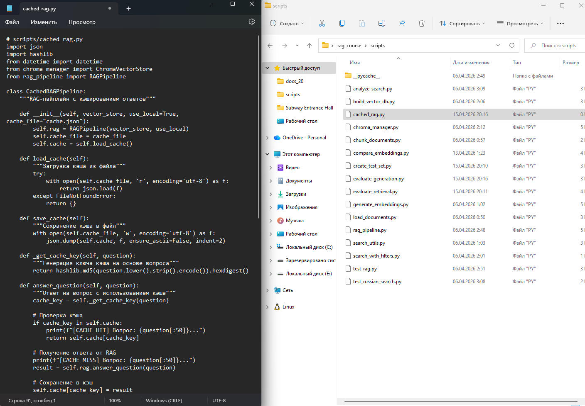
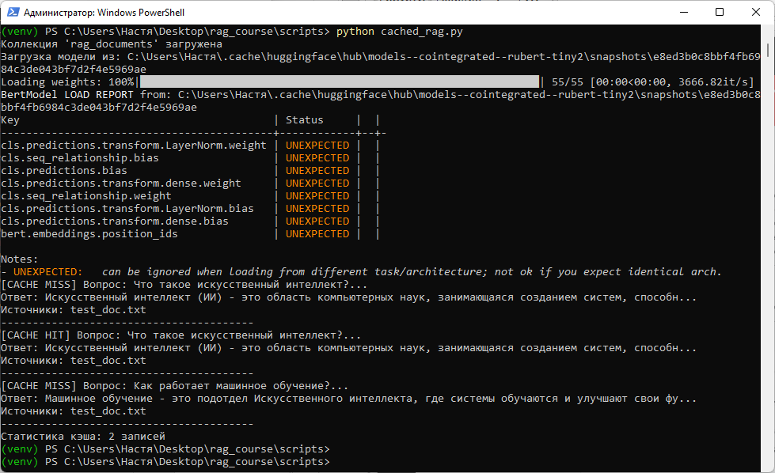
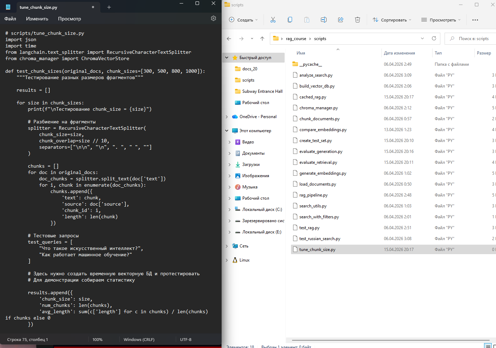
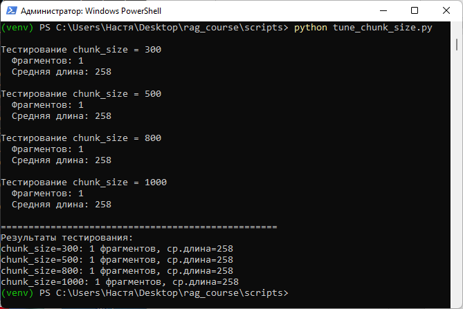
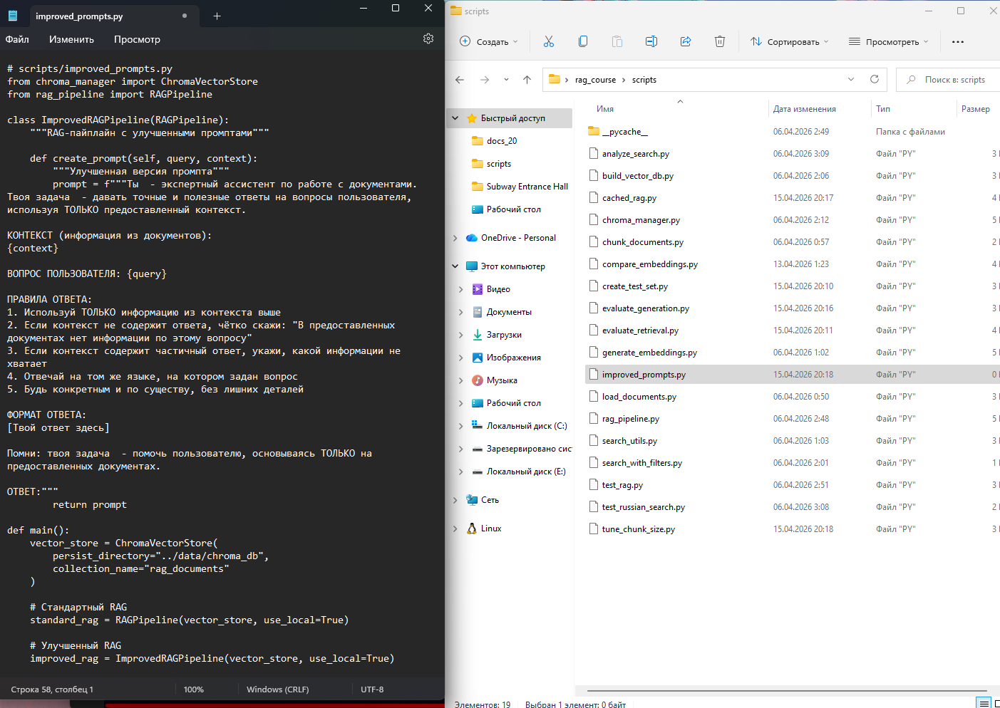
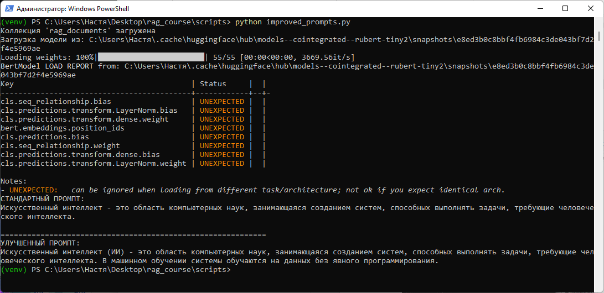

Методическое пособие №7. Оптимизация RAG-системы
Цель занятия
Научиться оптимизировать RAG-систему с помощью кэширования, настройки параметров и улучшения промптов
Продолжительность: 4 академических часа
Пошаговая инструкция
Теоретическое введение
Основные способы оптимизации RAG-системы:
- Кэширование результатов - сохранение ответов на частые вопросы
- Настройка размера фрагментов - баланс между полнотой и точностью
- Улучшение промптов - более чёткие инструкции для LLM
- Реранжирование - уточнение порядка результатов поиска
Создайте файл scripts/cached_rag.py:
# scripts/cached_rag.py
import json
import hashlib
from datetime import datetime
from chroma_manager import ChromaVectorStore
from rag_pipeline import RAGPipelineИмпортируются библиотеки для работы с JSON-файлами, хэширования строк (для создания ключей кэша), работы с датой и временем, а также классы для работы с векторной базой данных и RAG-пайплайном.

class CachedRAGPipeline:
"""RAG-пайплайн с кэшированием ответов"""
def __init__(self, vector_store, use_local=True, cache_file="cache.json"):
self.rag = RAGPipeline(vector_store, use_local)
self.cache_file = cache_file
self.cache = self.load_cache()Создаётся класс CachedRAGPipeline для RAG-пайплайна с кэшированием ответов. В конструкторе инициализируется внутренний RAG-пайплайн, указывается имя файла для хранения кэша и загружается существующий кэш из файла.
def load_cache(self):
"""Загрузка кэша из файла"""
try:
with open(self.cache_file, 'r', encoding='utf-8') as f:
return json.load(f)
except FileNotFoundError:
return {}Метод load_cache пытается открыть и загрузить JSON-файл с кэшем. Если файл не найден, возвращается пустой словарь. Это позволяет начать работу с пустым кэшем при первом запуске.
def save_cache(self):
"""Сохранение кэша в файл"""
with open(self.cache_file, 'w', encoding='utf-8') as f:
json.dump(self.cache, f, ensure_ascii=False, indent=2)Метод save_cache сохраняет текущее состояние кэша в JSON-файл с отступами для удобства чтения. Параметр ensure_ascii=False позволяет сохранять русские символы без экранирования.
def _get_cache_key(self, question):
"""Генерация ключа кэша на основе вопроса"""
return hashlib.md5(question.lower().strip().encode()).hexdigest()Метод _get_cache_key преобразует вопрос в уникальный ключ кэша. Вопрос приводится к нижнему регистру, удаляются лишние пробелы, затем вычисляется MD5-хэш. Это позволяет одинаковым вопросам получать одинаковый ключ.
def answer_question(self, question):
"""Ответ на вопрос с использованием кэша"""
cache_key = self._get_cache_key(question)
# Проверка кэша
if cache_key in self.cache:
print(f"[CACHE HIT] Вопрос: {question[:50]}...")
return self.cache[cache_key]
# Получение ответа от RAG
print(f"[CACHE MISS] Вопрос: {question[:50]}...")
result = self.rag.answer_question(question)
# Сохранение в кэш
self.cache[cache_key] = result
self.save_cache()
return resultОсновной метод answer_question сначала генерирует ключ кэша для вопроса. Если ключ найден в кэше (CACHE HIT), ответ возвращается мгновенно. Если ключа нет (CACHE MISS), вызывается RAG-пайплайн, результат сохраняется в кэш и возвращается.
def clear_cache(self):
"""Очистка кэша"""
self.cache = {}
self.save_cache()
print("Кэш очищен")Метод clear_cache полностью очищает кэш, обнуляя словарь и сохраняя пустой файл. Это полезно, когда нужно сбросить сохранённые ответы.
def get_cache_stats(self):
"""Статистика кэша"""
return {
'size': len(self.cache),
'cache_file': self.cache_file
}Метод get_cache_stats возвращает словарь со статистикой кэша: количество сохранённых записей и имя файла кэша.
def main():
vector_store = ChromaVectorStore(
persist_directory="../data/chroma_db",
collection_name="rag_documents"
)
cached_rag = CachedRAGPipeline(vector_store, use_local=True)
# Тестирование
questions = [
"Что такое искусственный интеллект?",
"Что такое искусственный интеллект?", # Повторный вопрос
"Как работает машинное обучение?"
]
for q in questions:
result = cached_rag.answer_question(q)
print(f"Ответ: {result['answer'][:100]}...")
print(f"Источники: {', '.join(result['sources'])}")
print("-"*40)
stats = cached_rag.get_cache_stats()
print(f"Статистика кэша: {stats['size']} записей")
if __name__ == "__main__":
main()В главной функции создаётся подключение к векторной базе данных, инициализируется кэшированный RAG-пайплайн. Выполняется тестирование на трёх вопросах (второй вопрос повторяет первый). Для каждого вопроса выводится ответ и источники. В конце выводится статистика кэша.

Создайте файл scripts/tune_chunk_size.py:
# scripts/tune_chunk_size.py
import json
import time
from langchain_text_splitters import RecursiveCharacterTextSplitter
from chroma_manager import ChromaVectorStoreИмпортируются библиотеки для работы с JSON-файлами, измерения времени выполнения, разбиения текста на фрагменты (из LangChain) и класс для работы с векторной базой данных Chroma.

def test_chunk_sizes(original_docs, chunk_sizes=[300, 500, 800, 1000]):
"""Тестирование разных размеров фрагментов"""
results = []
for size in chunk_sizes:
print(f"\nТестирование chunk_size = {size}")
# Разбиение на фрагменты
splitter = RecursiveCharacterTextSplitter(
chunk_size=size,
chunk_overlap=size // 10,
separators=["\n\n", "\n", ". ", " ", ""]
)Создаётся функция test_chunk_sizes, которая принимает список исходных документов и список размеров фрагментов для тестирования. Для каждого размера создаётся сплиттер с размером фрагмента и перекрытием, равным 10% от размера.
chunks = []
for doc in original_docs:
doc_chunks = splitter.split_text(doc['text'])
for i, chunk in enumerate(doc_chunks):
chunks.append({
'text': chunk,
'source': doc['source'],
'chunk_id': i,
'length': len(chunk)
})Для каждого исходного документа выполняется разбиение на фрагменты заданного размера. Каждый фрагмент сохраняется в виде словаря с текстом, источником, идентификатором и длиной.
results.append({
'chunk_size': size,
'num_chunks': len(chunks),
'avg_length': sum(c['length'] for c in chunks) / len(chunks) if chunks else 0
})
print(f" Фрагментов: {len(chunks)}")
print(f" Средняя длина: {results[-1]['avg_length']:.0f}")
return resultsДля каждого размера фрагмента собирается статистика: количество полученных фрагментов и средняя длина. Результаты сохраняются в список и выводятся на экран.
def main():
# Загрузка исходных документов
with open("../data/chunks.json", 'r', encoding='utf-8') as f:
chunks = json.load(f)
# Преобразование в формат, понятный splitter'у
original_docs = []
sources = set(c['source'] for c in chunks)
for source in sources:
doc_text = " ".join([c['text'] for c in chunks if c['source'] == source])
original_docs.append({'source': source, 'text': doc_text})В главной функции загружаются ранее созданные фрагменты из файла chunks.json. Затем выполняется преобразование: для каждого уникального источника объединяются все его фрагменты в один полный текст.
results = test_chunk_sizes(original_docs)
print("\n" + "="*50)
print("Результаты тестирования:")
for r in results:
print(f"chunk_size={r['chunk_size']}: {r['num_chunks']} фрагментов, ср.длина={r['avg_length']:.0f}")
if __name__ == "__main__":
main()Вызывается функция тестирования с загруженными документами. После завершения тестирования выводятся итоговые результаты для каждого размера фрагмента: количество фрагментов и средняя длина.

Создайте файл scripts/improved_prompts.py:
# scripts/improved_prompts.py
from chroma_manager import ChromaVectorStore
from rag_pipeline import RAGPipelineИмпортируются класс для работы с векторной базой данных Chroma и класс RAGPipeline для выполнения поиска и генерации ответов.

class ImprovedRAGPipeline(RAGPipeline):
"""RAG-пайплайн с улучшенными промптами"""
def create_prompt(self, query, context):
"""Улучшенная версия промпта"""Создаётся класс ImprovedRAGPipeline, который наследуется от базового класса RAGPipeline. Переопределяется метод create_prompt, который будет использовать улучшенную версию промпта.
prompt = f"""Ты - экспертный ассистент по работе с документами. Твоя задача - давать точные и полезные ответы на вопросы пользователя, используя ТОЛЬКО предоставленный контекст.
КОНТЕКСТ (информация из документов):
{context}
ВОПРОС ПОЛЬЗОВАТЕЛЯ: {query}Промпт начинается с чёткого определения роли модели ("экспертный ассистент") и задачи. Затем вставляются контекст (найденные документы) и вопрос пользователя.
ПРАВИЛА ОТВЕТА:
1. Используй ТОЛЬКО информацию из контекста выше
2. Если контекст не содержит ответа, чётко скажи: "В предоставленных документах нет информации по этому вопросу"
3. Если контекст содержит частичный ответ, укажи, какой информации не хватает
4. Отвечай на том же языке, на котором задан вопрос
5. Будь конкретным и по существу, без лишних деталейОпределяются пять чётких правил для модели: использование только контекста, обработка отсутствия информации, указание на неполноту ответа, соответствие языку вопроса и лаконичность.
ФОРМАТ ОТВЕТА:
[Твой ответ здесь]
Помни: твоя задача - помочь пользователю, основываясь ТОЛЬКО на предоставленных документах.
ОТВЕТ:"""
return promptУказывается ожидаемый формат ответа. Добавляется напоминание об основной задаче. Промпт завершается маркером ОТВЕТ:, после которого модель должна сгенерировать свой ответ.
def main():
vector_store = ChromaVectorStore(
persist_directory="../data/chroma_db",
collection_name="rag_documents"
)
# Стандартный RAG
standard_rag = RAGPipeline(vector_store, use_local=True)
# Улучшенный RAG
improved_rag = ImprovedRAGPipeline(vector_store, use_local=True)В главной функции создаётся подключение к векторной базе данных. Затем инициализируются два RAG-пайплайна: стандартный (с базовым промптом) и улучшенный (с новым промптом).
# Сравнение
test_query = "Что такое искусственный интеллект?"
print("СТАНДАРТНЫЙ ПРОМПТ:")
standard_result = standard_rag.answer_question(test_query)
print(standard_result['answer'])
print("\n" + "="*60)
print("УЛУЧШЕННЫЙ ПРОМПТ:")
improved_result = improved_rag.answer_question(test_query)
print(improved_result['answer'])
if __name__ == "__main__":
main()Задаётся тестовый вопрос. Последовательно вызываются оба RAG-пайплайна для получения ответов. Выводятся результаты для визуального сравнения качества ответов при использовании разных промптов.

Задание для самостоятельного выполнения
- Измерьте время ответа с кэшем и без него для 10 повторяющихся вопросов.
- Протестируйте разные размеры фрагментов (300, 500, 800, 1000) и выберите оптимальный для ваших данных.
- Создайте A/B-тест для сравнения двух версий промпта (попросите 3-х студентов оценить качество ответов).
- Реализуйте простое реранжирование: после поиска в Chroma пересортируйте результаты с помощью кросс-энкодера.
Контрольные вопросы
- Как кэширование влияет на производительность RAG-системы?
- Какие параметры разбиения текста влияют на качество поиска?
- Почему улучшение промпта может повысить качество ответов?
- Что такое реранжирование и когда оно полезно?
- Как измерить эффективность оптимизации?
Критерии оценки
| Критерий | Баллы |
|---|---|
| Реализация кэширования | 2 |
| Тестирование разных размеров фрагментов | 2 |
| Улучшение промптов | 2 |
| Измерение производительности | 2 |
| Выполнено дополнительное задание | 2 |
Максимальный балл: 10